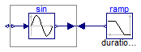
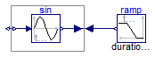

Test of the connection of a Sine with a Ramp block leading to a nonlinear system of equations (the output of a Sine should move according to a ramp)
Extends from Modelica.Icons.ExamplesPackage (Icon for packages containing runnable examples).
| Name | Description |
|---|---|
| Reference solution in pure Modelica | |
| Reference solution in pure Modelica using exactly the same structuring as in Model WithFMUs | |
| Solution with FMUs | |
| For all models in this package an FMU must be generated |
 FMITest.NonlinearSystems.InverseSine.Reference
FMITest.NonlinearSystems.InverseSine.Reference
Reference solution in pure Modelica

Extends from Modelica.Icons.Example (Icon for runnable examples).
FMITest.NonlinearSystems.InverseSine.WithFMUsReference
Reference solution in pure Modelica using exactly the same structuring as in Model WithFMUs

Extends from Modelica.Icons.Example (Icon for runnable examples).
FMITest.NonlinearSystems.InverseSine.WithFMUs
Solution with FMUs
Extends from Modelica.Icons.Example (Icon for runnable examples).